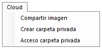
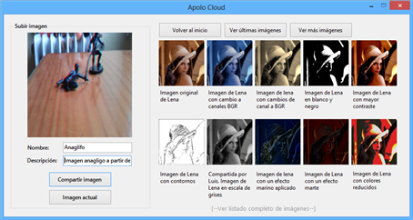
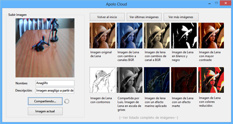
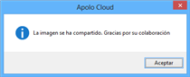
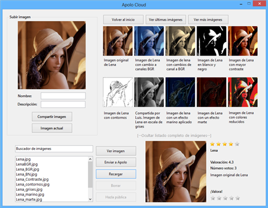
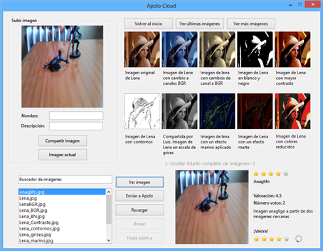
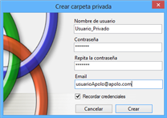
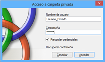
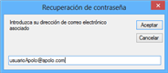

La antepenúltima opción del menú superior. En la siguiente imagen se muestra su aspecto y contenido.


En esta sección se pueden compartir las imágenes creadas con Apolo para que éstas sean visibles al resto de usuario de Apolo. Además añade funcionalidades básicas para crear su propia carpeta privada a la que únicamente se podrá acceder con sus credenciales, y así disponer de su espacio para guardar sus imágenes privadas.
Con respecto al almacenamiento en el servidor, no se garantiza que las imágenes estén disponibles siempre, podrían perderse sin previo aviso y sin posibilidad de recuperación. Apolo sí garantiza su privacidad, desde el equipo de desarrollo se asegura la no publicación de las imágenes tanto públicas como de sesiones privadas. No obstante, tenga en cuenta que el código fuente es de libre distribución y algún usuario malévolo podría hacerse con las contraseñas del servidor para usos fraudulentos.
Se trata de un servidor público donde poder compartir y ver las imágenes que suban los usuarios. Estás imágenes deben subirse con una pequeña descripción y su nombre. Opcionalmente hay una sección para poder valorar las imágenes y así dar una opinión de la misma.
Una vez se ha pulsado sobre la opción Compartir imágenes, aparece un pequeño recuadro que indica que se está estableciendo conexión y tras él, se desplegará el formulario principal de Apolo Cloud.

Una vez abierta la pantalla principal, se pueden observar las primeras diez imágenes ordenadas alfabéticamente por su nombre. Pulsando los botones superiores, se irán mostrando más imágenes, volver al principio e ir al final.
A continuación se muestra una captura de pantalla del proceso de compartir una imagen. Primeramente se debe seleccionar la imagen que se quiere subir, para ello existe un botón en la parte de la izquierda (Imagen actual) que hace que la imagen a subir sea la que está en el formulario principal de Apolo. Una vez se ha seleccionado la imagen que se quiere subir, se deben rellenar los campos Nombre (nombre que aparecerá visible en Apolo Cloud) y Descripción (una pequeña descripción de que informe sobre la imagen).


Tras este proceso se debe pulsar en el botón Compartir imagen y aparecerá un círculo que indica que se está actualizando los datos.


Tras unos segundos, aparecerá un cuadro de diálogo informando de la subida de la imagen. Indicará si el proceso ha sido satisfactorio o si ha ocurrido algún error. En la siguiente imagen se observa el cuadro correspondiente a una subida con éxito al servidor.


Desplegando el menú completo (pulsando en Ver listado completo de imágenes en la parte inferior), se puede ver un listado con todas las imágenes del servidor y la posibilidad de valorarlas.


En la parte izquierda se encuentra la lista con todas las imágenes disponibles, además de un pequeño buscador. Para valorar una imagen primeramente hay que buscarla en la lista y posteriormente pulsar en el botón Ver imagen. Tras unos segundos se mostrará en la parte de la derecha la imagen con su nombre, valoración (del 1 al 5), número de votos y descripción. Para valorar la imagen, basta con hacer clic en las estrellas de la parte inferior y esperar unos segundos a que la valoración se haga efectiva.


Si no ha ocurrido nada durante el proceso de valoración, aparecerá un cuadro de diálogo agradeciendo su valoración y en unos segundos se recargará la imagen para que aparezca con su nueva valoración.
Por último, el botón Enviar a Apolo manda la imagen seleccionada en ese momento a la aplicación principal, pudiendo enviar las imágenes también directamente haciendo clic encima de ella. El botón Recargar actualiza los datos de la lista para visualizar todos los cambios hasta el momento.
Este menú sirve para crear una sesión privada donde almacenar imágenes de forma privada.


Primeramente hay que rellenar los datos que aparecen en la anterior imagen, y pulsar el botón Crear. Tras unos segundos, y si no ha ocurrido ningún error, se abrirá su sesión privada en la que poder guardar las imágenes de forma no pública.
Si al crear la carpeta privada, se selecciona la opción Recordar credenciales, su usuario y contraseña se almacenarán en Apolo y serán recordadas hasta la próxima instalación y hasta que el usuario las modifique.
Esta opción permite, una vez creada una carpeta privada, iniciar sesión con sus credenciales para poder acceder a su carpeta privada.


Una vez iniciada la sesión, automáticamente se abre la ventana principal de Apolo Cloud con su sesión. La carpeta es la misma que en la opción de Compartir imagen a excepción de que en la parte inferior aparecen dos botones, uno para hacer la imagen pública (automáticamente podrá verse en la sesión compartida de Apolo Cloud, junto con el nombre del usuario que la comparte), y la opción de eliminar una imagen.
Si no recuerda los datos de su sesión, puede pulsar (dentro de Acceso a carpeta privada) en la opción de recuperación de contraseña y aparecerá un pequeño menú donde debe introducir su cuenta de correo.


Tras unos segundos, y si ha introducido correctamente la dirección, le será enviado a su correo electrónico su usuario y contraseña. Tenga en cuenta que estos datos se envían directamente como texto plano, es decir, alguien con acceso a su correo los podría visualizar.
Created with the Personal Edition of HelpNDoc: Full-featured Kindle eBooks generator